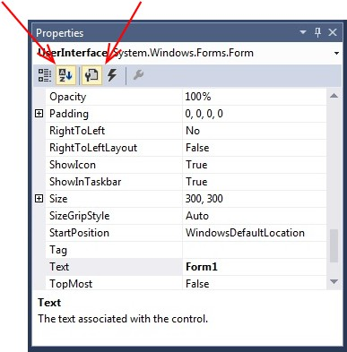
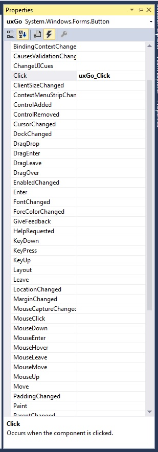

The Design Window
The Design Window
The Design Window in Visual Studio is a window used to build graphical components. To open the Design Window for a graphical component, double-click on the component’s file name in the Solution Explorer. If you are working through the example from the previous two sections, double-click “UserInterface.cs” to open its Design Window. It will initially contain a blank form:
You can resize the form by dragging the handles on the right and bottom edges. You can also change the title of the form (“Form1” in the picture above) as follows:
-
Click on the form.
-
If the Properties window isn’t showing on the right, select “Properties Window” from the “View” menu.
-
Look at the row of buttons near the top of the properties window, and make sure the second and third button are highlighted:
If either of these buttons isn’t highlighted, click it to highlight it. The first two buttons on this row toggle whether the information is arranged by category (the first button) or alphabetically (the second button). The next two buttons toggle whether the control’s properties (the third button) or events (the fourth button — we’ll discuss these below) are shown.
-
Find “Text” in the left column of the Properties window - it will probably be highlighted. Click on the space to its right, and edit the text to give your desired title. If you are working through the example, give it a title of “Hello”.
For example, after resizing and changing the title, we might have a form that looks like this:
To add various graphical controls to the form, we use the Toolbox, which is normally available via a tab on the left edge (if not, you can always access it via the “View” menu). For example, let’s add a box that will contain text generated by the program. We open the Toolbox and click on the TextBox control, which can be found in the “Common Controls” section. We can then click on the design window (outside of the form) to bring it to the front, and drag an area on the form that we would like the TextBox to fill. After doing so, there will be a handle on the right and left edges to allow horizontal resizing (don’t worry about vertical resizing yet). You can also drag the TextBox to adjust its location. If you do this, as the edges of the TextBox approach the edges of the frame, struts will appear, helping you to leave an appropriate margin.
After adding a control, we usually need to customize it to some degree. To do this, click on it, then open the Properties window again. This window will now display the properties of the TextBox. The first property we will always want to change is the name of the variable that the program will use to refer to this control. This property is called “(Name)”, and will be near the top. You will need to change this name so that it follows the naming convention for controls on forms.
There are various properties that can be changed to customize the appearance and behavior of a control. For example, we can change the font of a TextBox by changing its Font property. This in turn will affect the height of the TextBox. We can prevent the user from editing it by setting its ReadOnly property to True. If we want to allow multiple lines, we can set its Multiline property to True. This in turn will add handles to the top and bottom edges so that we can adjust its height. All of the properties of a GUI control are documented in that control’s API documentation within the .NET API browser.
Thus, continuing the above example, if we modify the TextBox’s variable name to uxDisplay, its Font property to Microsoft Sans Serif, 12pt and its ReadOnly property to True, we would have the following form:

Using a similar process, we can now add a Button to the form and name it uxGo. To change the text in the Button, we will need to change its Text property. This might give us the following:

Now that we have a Button on our form, it would be appropriate to provide some functionality for that Button. Clicking on a Button signals an event to which our program may respond. In order to cause our program to respond to such an event, we need to provide an event handler for it. Because a click is the default event for a Button, we can create an event handler for this event by simply double-clicking on the Button. Doing so will open a code window containing the contents of the source code file defining the current form. Furthermore, if the name of the Button is uxGo, the following method will have been added:
private void uxGo_Click(object sender, EventArgs e)
{
}
This method will be called whenever the Button is clicked (code causing this behavior will have been automatically added to the file containing the automatically-generated code for the form). Thus, to provide the appropriate functionality for the Button we just need to add code providing this functionality to this method. We will discuss this in more detail in the next section.
Before we leave the design window entirely, however, we need to talk about a more general way of accessing the event handlers associated with controls. Going back to the Properties window for a control, clicking the fourth button in the row of buttons near the top (the one that looks like a lightning bolt) will cause all of the possible events for that control to be displayed, and any event handler that has been created for that event. For example, if we have created the event handler described above, then the list of events for the Button looks like this:

This list is useful for two reasons. The more obvious reason is that we sometimes might want to handle an event that is not the default event for a control. For example, we might want a Button to react in some way (perhaps by changing color, for example) whenever the mouse enters or leaves it. In order to implement this functionality, we would need event handlers for the MouseEnter and MouseLeave events. We can add these event handlers by double-clicking these events in this list.
The less obvious use for this list is to remove an event handler. Often we find that we have added an event handler that we don’t need, perhaps by double-clicking in the wrong place. When this happens, shouldn’t just delete the code, because there is other automatically-generated code that refers to it. Deleting the code for an event handler would therefore lead to a syntax error. Instead, the proper way to remove an event handler is to go to the list of events, right-click on the name of the event, and select “Reset” from the resulting popup menu. This safely deletes the code and all automatically-generated references to it. (Sometimes it doesn’t delete the code, but if not, it is now safe to delete it.)